DNA
＋
RNA
细胞分裂活性剂
从酵母等中提取并熟成的细胞分裂活性提取物（天然提取物），其中含有核酸和氨基酸。
DNA（脱氧核糖核酸）＋RNA（核糖核酸）＝ 充满活力的生命力。「植物核酸」含有大量这些成分， 并能均衡地促进营养生长和生殖生长，因此对所有作物都有很高的效果。
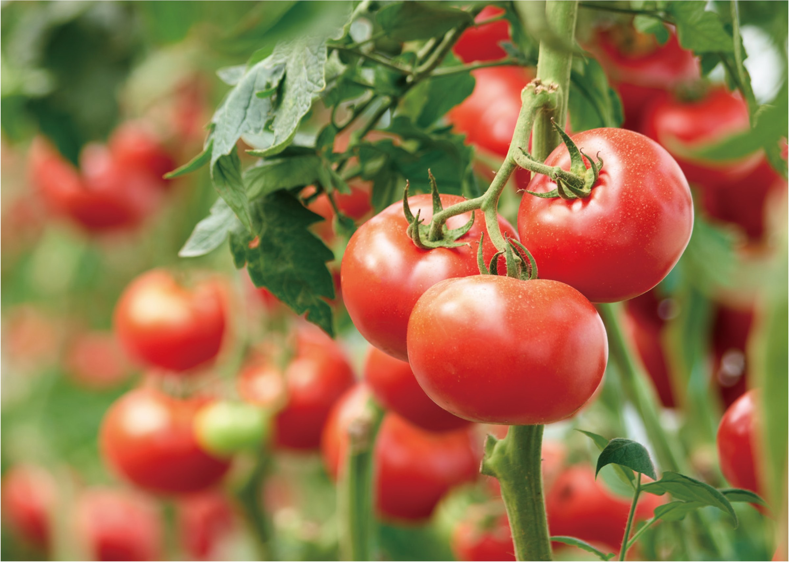
连作土壤 ・ 生育不良土壤的改善
从酵母等中提取并熟成的细胞分裂活性提取物（天然提取物），其中含有核酸与氨基酸。 DNA（脱氧核糖核酸）＋RNA（核糖核酸）＝ 充满活力的生命力，均衡促进营养生长与生殖生长。
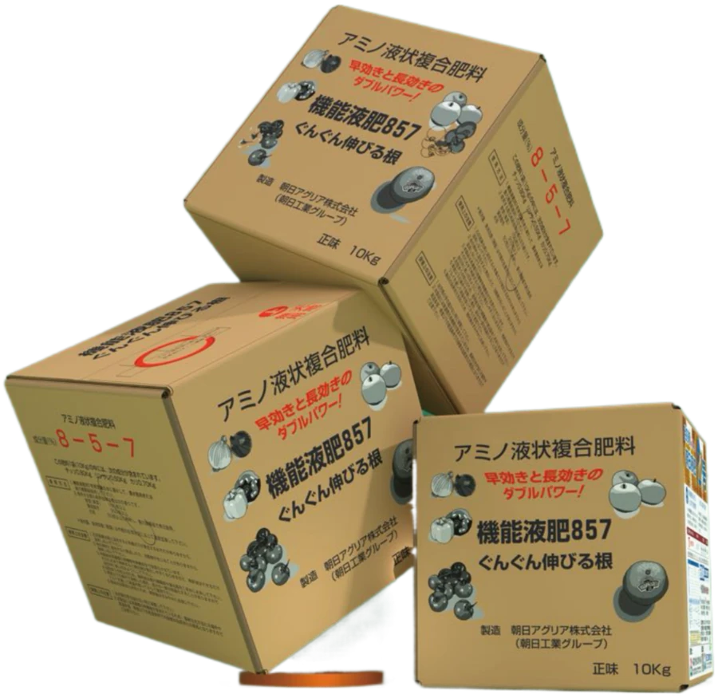
アミノ液状複合肥料 正味 10kg从酵母等中提取并熟成的细胞分裂活性提取物（天然提取物），其中含有核酸和氨基酸。
DNA（脱氧核糖核酸）＋RNA（核糖核酸）＝ 充满活力的生命力。「植物核酸」含有大量这些成分， 并能均衡地促进营养生长和生殖生长，因此对所有作物都有很高的效果。
快速提升根系水平，苗齐苗壮而不疯长，把养分用在根系和产量上。
针对连续阴天、长势不良、连作土壤，恢复作物长势，使根系变发达。
疏松土壤、改善根际环境，让根系在不良土壤中也能正常伸展。
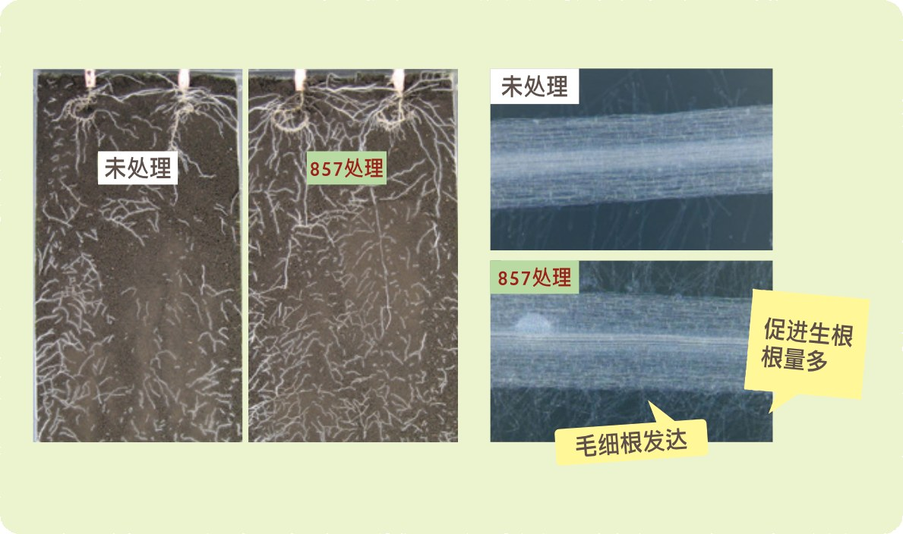
DNA（脱氧核糖核酸）＋RNA（核糖核酸）＝ 充满活力的生命力。 「植物核酸」含有大量这些成分，并能均衡地促进营养生长和生殖生长。
核酸与氨基酸参与细胞分裂过程，为分生组织提供充足原料。
毛细根发达，根量明显增多，白根密布于根际。
根系吸收能力增强，地上部生长充实，生殖生长获得支撑。
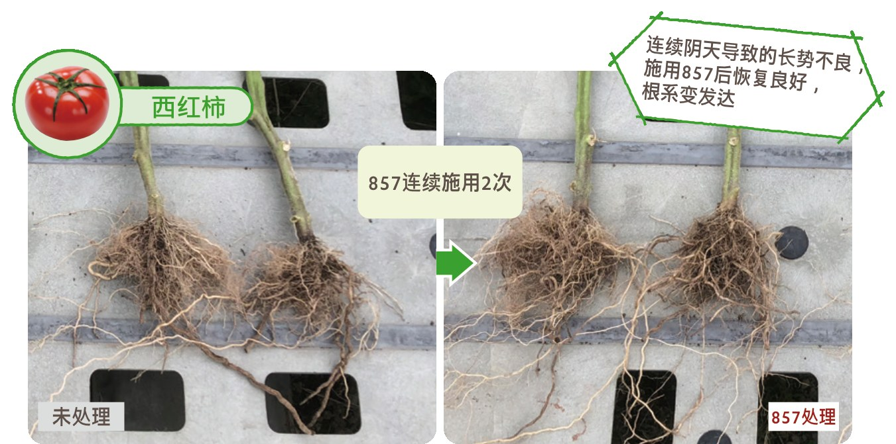
连续阴天导致的長势不良，施用857后长势良好、根系变发达，连续施用 2 次。
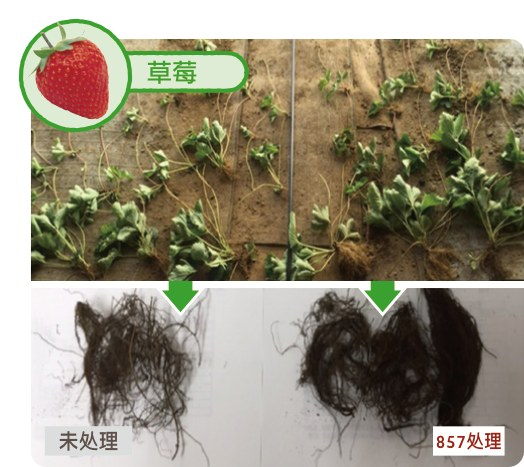
滴灌 3 次后，对整体和根部的鲜重和干重进行了对比，857 处理均高于常规区。
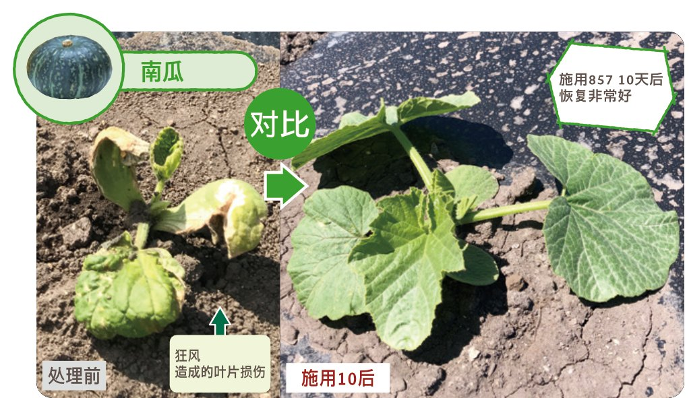
狂风造成的叶片损伤，施用857 10 天后恢复非常好。
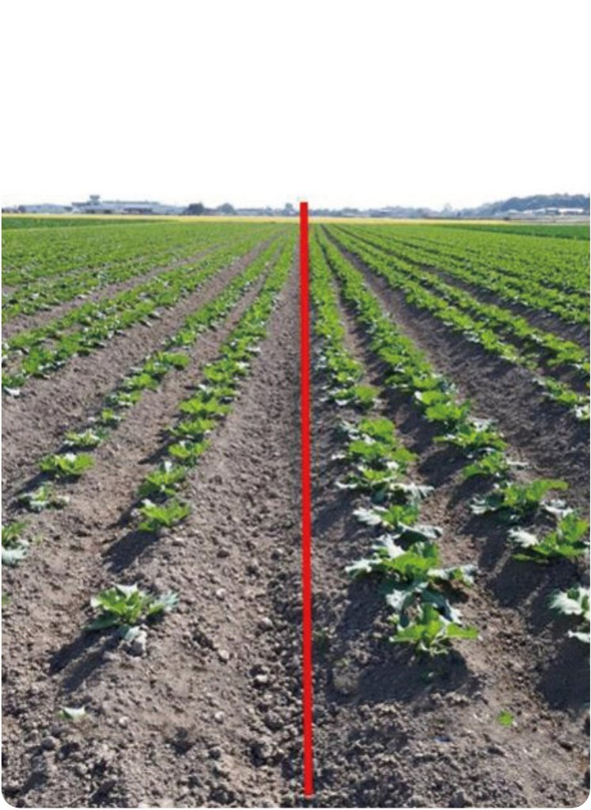
定植前一天施用857，定植后的成活率大幅提升，死苗极少。
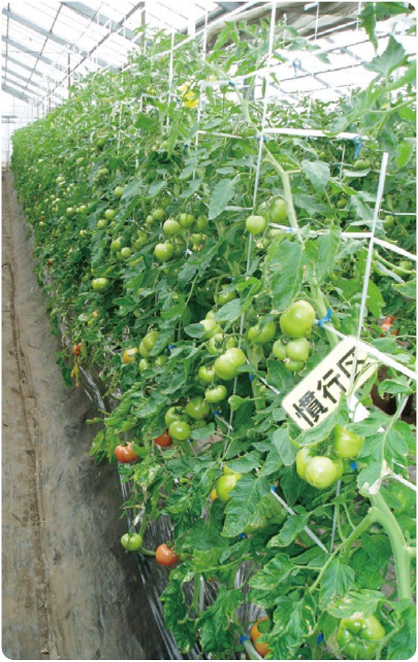
与试验区同期对照，长期低温弱光条件下长势明显偏弱。
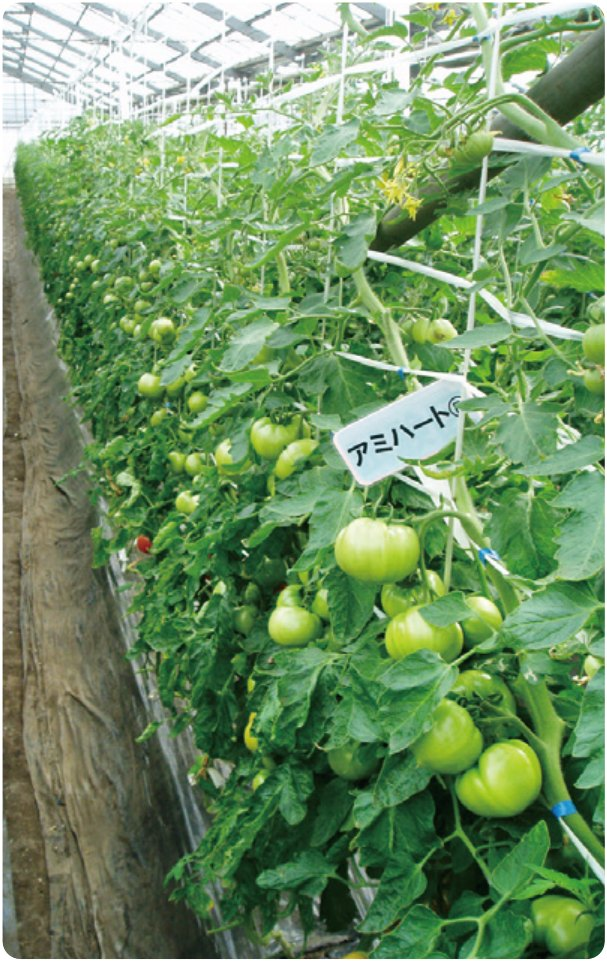
冬季施用857 冲施两次、500 倍稀释喷施 2 次后，上部番茄明显增大，冬季产量明显提高。
| 项目 | 部位 | 试验区 | 常规区 | 对比（%） |
|---|---|---|---|---|
| 新鲜重 | 全体 | 453 | 377 | 120 |
| 干物重 | 全体 | 101 | 68 | 149 |
| 地上 | 93 | 64 | 145 | |
| 根部 | 8 | 4 | 200 |
※ 数据整理自朝日綠源《857号》产品资料中的草莓滴灌试验结果。
对各类作物均表现稳定的生根与壮秧效果，以下为产品资料中列出的代表性作物。
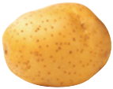
马铃薯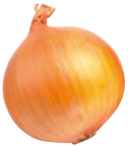
洋葱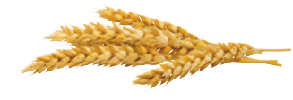
小麦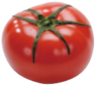
番茄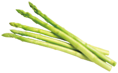
芦笋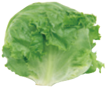
生菜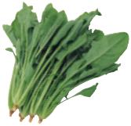
菠菜在生育初期或施肥效率高的灌水设施栽培等场合，请先稀释 500 倍 再尝试。
可以与其他材料混用。包括农药与矿物质较多的材料或农药并用时，请事先确认是否会产生沉淀。
避免与石灰硫磺混合剂等碱性材料混用。
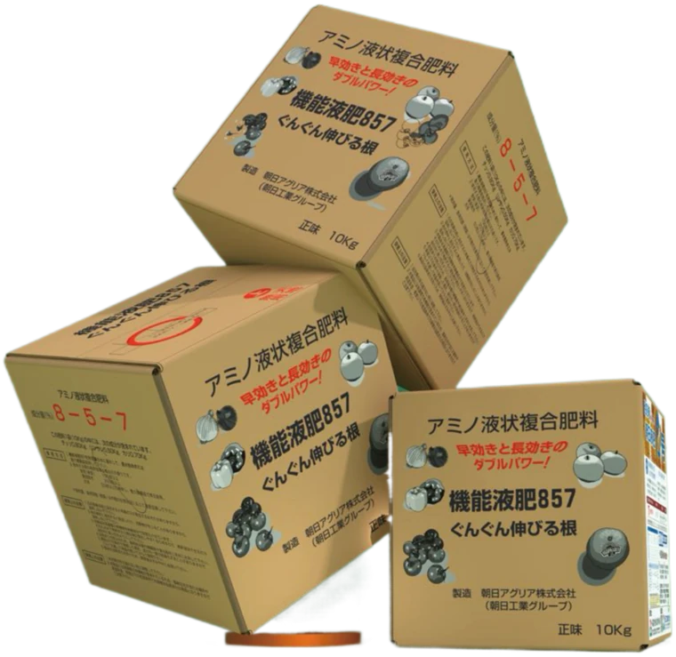
| 品名 | 機能液肥 857号（アミノ液状複合肥料） |
|---|---|
| 核心成分 | 核酸（DNA＋RNA）、氨基酸（天然提取物） |
| 标示成分 | 8 － 5 － 7 |
| 净含量 | 10 kg |
| 剂型 | 液状复合肥料 |
| 适用时期 | 定植期 ～ 收获期 |
| 制造 | 朝日アグリア株式会社（朝日工業グループ） |
| 販売元 | 山东朝日绿源农业高新技术有限公司 |
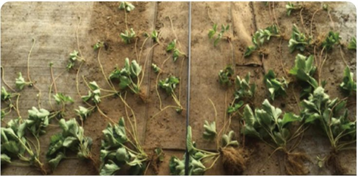